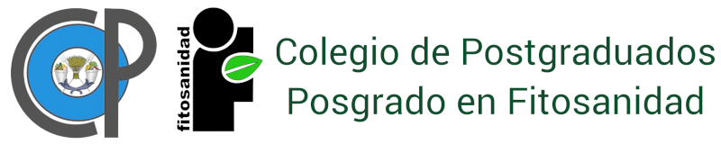

• PRODUCTIVIDAD DEL POSGRADO EN FITOSANIDAD •
Núcleo Académico
Comunicación pública de la ciencia, tecnológica y de innovación
Participación en congresos
Formación de capital humano
"Cursos o diplomados impartidos
Tesis dirigidas
Actas de examen de grado
Premios y distinciones
Premios y distinciones
Producción científica
"Memorias de congresos
Artículos científicos
Vinculación
Convenios y acuerdos de colaboracion FITOSANIDAD
Vinculación actores e instituciones
Actas de examen estudiantes SENASICA
Estudiantes
Comunicación pública de la ciencia, tecnológica y de innovación
Ponencias en congresos
Estancias
"Estancias de investigación
Becas
Cartas de liberación de beca
Producción científica
"Memorias de congresos
Artículos científicos
Colegio de Postgraduados ••• Posgrado en Fitosanidad